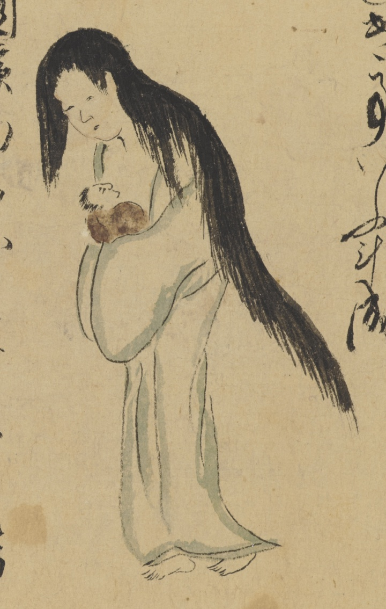

女房；ニョウボウ，幽霊；ユウレイ，産女；ウブメ，女；オンナ

源蔵の女房の幽霊。赤子を抱いている。白装束。長い黒髪を垂らしている。
著作者：長岡多門／出典：親書誌：U426_nichibunken_0448：諸国妖怪図巻／日付：2019／資源識別子：U426_nichibunken_0448_0001_0004
Copyright (c)2010- International Research Center for Japanese Studies, Kyoto, Japan. All rights reserved.